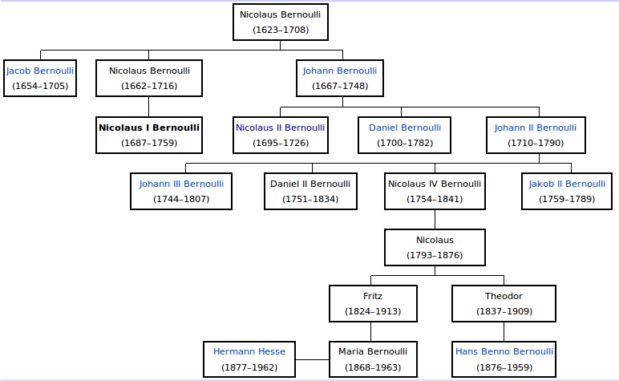

| Choisissez votre langue ! | Choose your language ! |
Le problème dit de Chicago est le suivant.
n hommes arrivent dans un bar chacun avec un chapeau.
Ils accrochent en arrivant leur chapeau au porte manteau.
En repartant, complètement saouls ils prennent n'importe quel chapeau.
Quelle est la probabilité pour qu'au moins un homme retrouve son chapeau.
Ce problème était déjà connu comme 'le problème de Bernoulli-Euler des lettres mal adressées' (Nicolaus I Bernoulli 1687-1759):

Une secrétaire rédige n lettres et les n enveloppes correspondantes. A la fin, pressée par le temps, elle emballe les lettres dans les enveloppes tout à fait au hasard.
Quelle est la probabilité pour qu'au moins une lettre parvienne à son destinataire.
D'une façon générale le problème est le suivant, étant donné une σ d'un ensemble fini à n éléments, quelle est la probabilité pour que σ possède au moins un ?
Ecrire une simulation en langage Python et/ou Julia.
aide
Soit σ une permutation de {1,2, ... ,n}
Calculer la probabilité que σ ait pour point fixe i.
Calculer la probabilité que σ ait pour points fixes i et j .
Appliquer la formule du crible de Poincaré.
solution
Soit Ai l'évènement: "i est un point fixe de σ". La probabilité de Ai est :
\( \displaystyle \frac{\left( {n - 1} \right)!}{n!} = \frac{1}{n} \)
La probabilité de Ai∩Aj est :\( \displaystyle \frac{\left( {n - 2} \right)!}{n!} = \frac{1}{n\left( {n - 1} \right)} \)
Notre évènement A est A1∪A2∪ ... ∪An.Nous avons donc :
\( \displaystyle \sum\limits_{i}P\left( A_{i} \right) = 1 \)
\( \displaystyle {\sum\limits_{i \neq j}P\left( A_{i} \cap A_{j} \right) = C_{n}^{2}} . \frac{1}{n\left( {n - 1} \right)} = \frac{1}{2!} \)
\( \displaystyle \sum\limits_{}P\left( {\bigcap\limits_{1 \leq i \leq p}A_{i}} \right) = C_{n}^{p} . \frac{1}{n\left( {n - 1} \right)...\left( {n - p + 1} \right)} = \frac{1}{p!} \)
En appliquant la formule du crible de Poincaré :\( \displaystyle P\left( {\bigcup\limits_{1 \leq i \leq n}A_{i}} \right) = 1 - \frac{1}{2!} + \frac{1}{3!} - .... + \left( {- 1} \right)^{n + 1}\frac{1}{n!} \)
La limite de cette probabilité est 1-1/e.Elle évolue peu quand n grandit.
Programme Python :
Soit avec Julia :
The so-called Chicago problem is as follows.
n men arrive at a bar each with a hat.
They hang their hat on the coat rack when they arrive.
When they leave, completely drunk, they take any hat.
What is the probability that at least one man finds his hat back.
This problem was already known as 'the Bernoulli-Euler problem of misaddressed letters' (Nicolaus I Bernoulli 1687-1759):
A secretary writes n letters and the corresponding n envelopes. At the end, pressed for time, she packs the letters in the envelopes quite at random.
What is the probability that at least one letter will reach its addressee.
Generally the problem is the following, given a σ of a finite n-element set, what is the probability that σ has at least one ?
Write a simulation in Python and/or Julia language.
hint
Let σ a permutation of {1,2, ... ,n}
Calculate the probability that σ has a fixed point i.
Calculate the probability that σ has as fixed points i and j .
Apply the inclusion-exclusion formula.
solution
Let Ai be the event: "i is a fixed point of σ". The probability of Ai is:
\( \displaystyle \frac{\left( {n - 1} \right)!}{n!} = \frac{1}{n} \)
The probability of Ai∩Aj is:\( \displaystyle \frac{\left( {n - 2} \right)!}{n!} = \frac{1}{n\left( {n - 1} \right)} \)
Our event A is A1∪A2∪ ... ∪An.So we have :
\( \displaystyle \sum\limits_{i}P\left( A_{i} \right) = 1 \)
\( \displaystyle {\sum\limits_{i \neq j}P\left( A_{i} \cap A_{j} \right) = C_{n}^{2}} . \frac{1}{n\left( {n - 1} \right)} = \frac{1}{2!} \)
\( \displaystyle \sum\limits_{}P\left( {\bigcap\limits_{1 \leq i \leq p}A_{i}} \right) = C_{n}^{p} . \frac{1}{n\left( {n - 1} \right)...\left( {n - p + 1} \right)} = \frac{1}{p!} \)
By applying the inclusion-exclusion formula:\( \displaystyle P\left( {\bigcup\limits_{1 \leq i \leq n}A_{i}} \right) = 1 - \frac{1}{2!} + \frac{1}{3!} - .... + \left( {- 1} \right)^{n + 1}\frac{1}{n!} \)
The limit of this probability is 1-1/e.It changes little when n grows.
Python program:
Either with Julia:
|
Création Gilles Dubois - licence CC-BY-SA
Created by Gilles Dubois - licence CC-BY-SA
|
Septembre 2023
September 2023
|
Version mobile Jquery
Mobile Jquery version
|
|